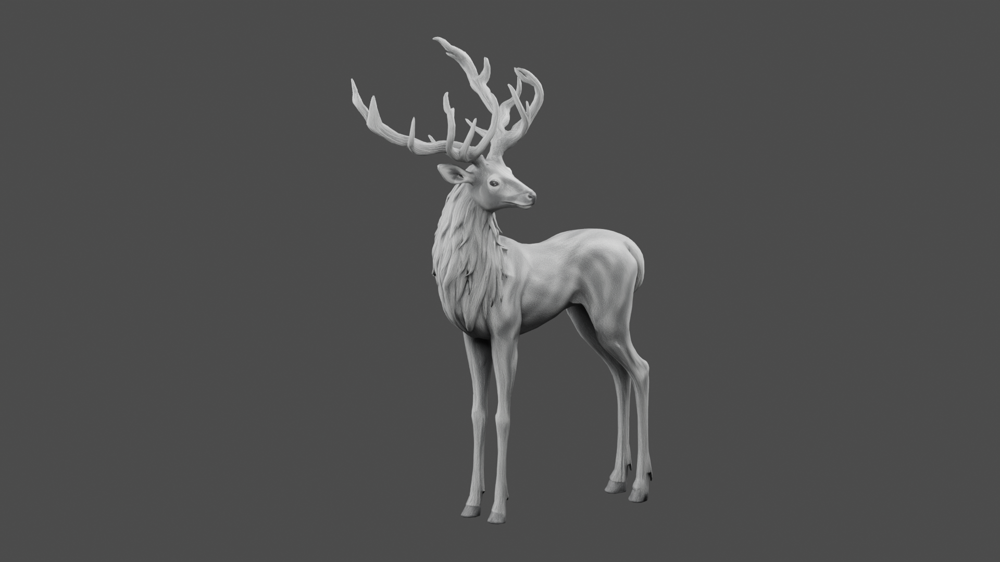
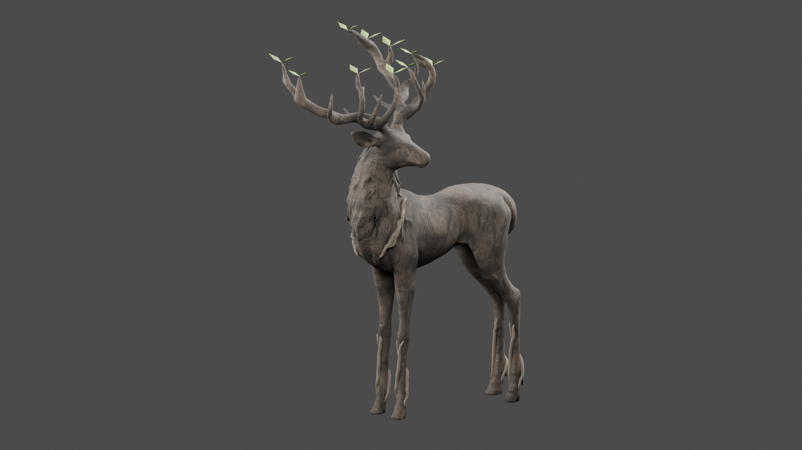

기존 사슴 · 동일 크기·카메라

목질 외형 수정판

수피 · 가슴과 발목의 뿌리 · 가지뿔의 새잎 · 잎 목걸이
정적 외형·등장 연출 검토 / 리깅·전투 미연결
외형·파일·수치 검사 완료. C2 영상은 메모리85% 제한으로 중단되어 미검증입니다.

모델16,591삼각형 · 재질3개 · 어깨 높이1.5m · 추가 Meshy 사용0 · 수치 검사48개 통과
Blender 편집 원본 · 변경·검증 보고서 · FBX 왕복 통계

외형을 먼저 검토해 주세요. C2 촬영 중단 자료는 완성된 소환 연출 영상으로 표시하지 않습니다.